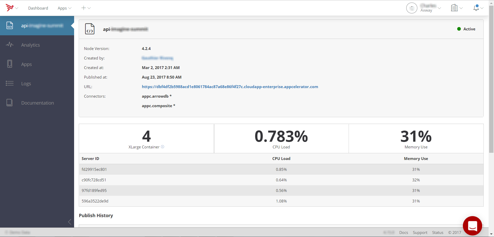
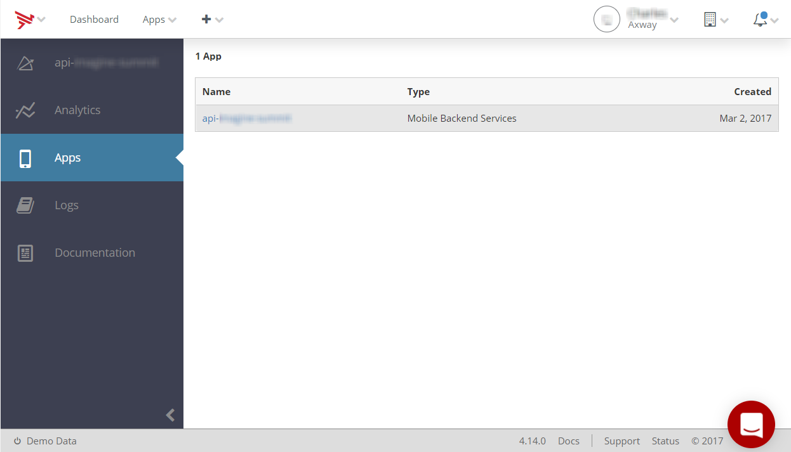
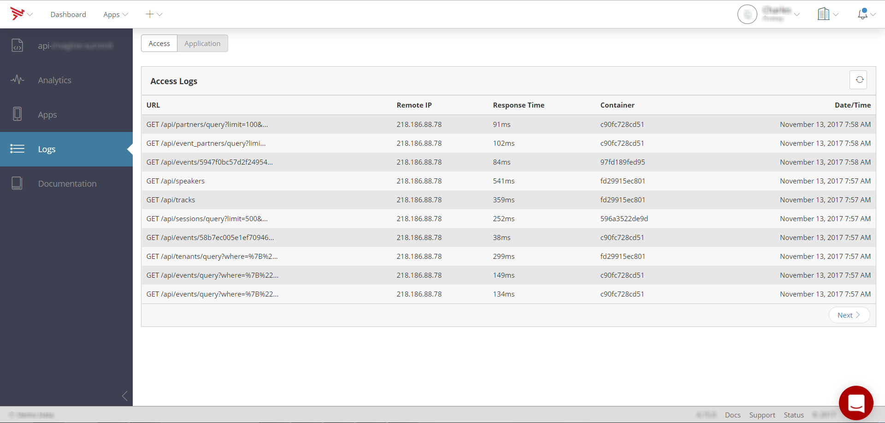

Managing API Builder Applications
To view API Builder app details, select it from the Apps menu. Or, select All Projects to view a list of all applications from which to select.
Viewing API Builder Application Information and Analytics
For API Builder applications, the Overview tab displays build and status information about the API Builder application as well as analytics information, such as the total number of API calls made over the selected time period, the number of application containers currently being used by the service, as well as the current CPU load and memory usage.

Viewing Connected Applications
The Apps tab displays a list of applications (Titanium or native) that are consuming the selected API Builder app and Mobile Backend Services. Select an application from the list to manage it.

Viewing and Filtering API Logs
The Logs tab displays a paginated table of all API calls made by your application to the selected API Builder app service.
The Logs table includes the following fields:
-
URL – Requested URL.
-
Remote IP – IP of client that made the request.
-
Response Time – Time spent responding to the request.
-
Container – ID of the application server container used to handle the request.
-
Date/Time – Date and time of the request in UTC.
